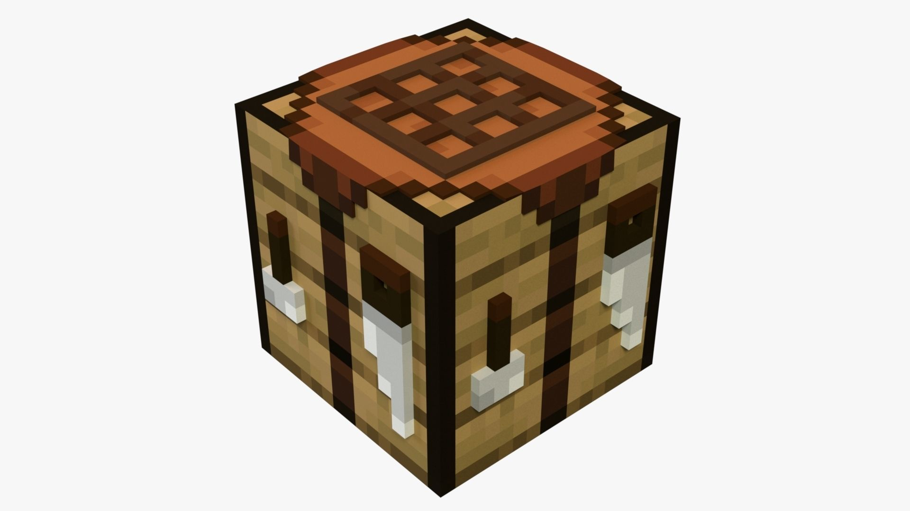

Crafting in Minecraft
An important aspect of the game that allows players to create stuff.
An important aspect of the game that allows players to create stuff.
Crafting is a core mechanic in Minecraft that allows players to create tools, weapons,
other items that you need for survival and exploration. By gathering resources and using the
crafting system, players can progress through the game, build structures, and defend themselves
against mobs. Crafting also encourages creativity as players can experiment with different
combinations of materials to discover new items and recipes.

When starting a new world, craft a crafting table and wooden pickaxe first so you can
gather resources more efficiently. You should also experiment with different recipes to
discover new items and expand your crafting knowledge. Remember to keep an eye on your
inventory because there is a limit to how many items you can carry.
Visit the Minecraft Wiki for more detailed crafting recips: Minecraft Crafting Guide